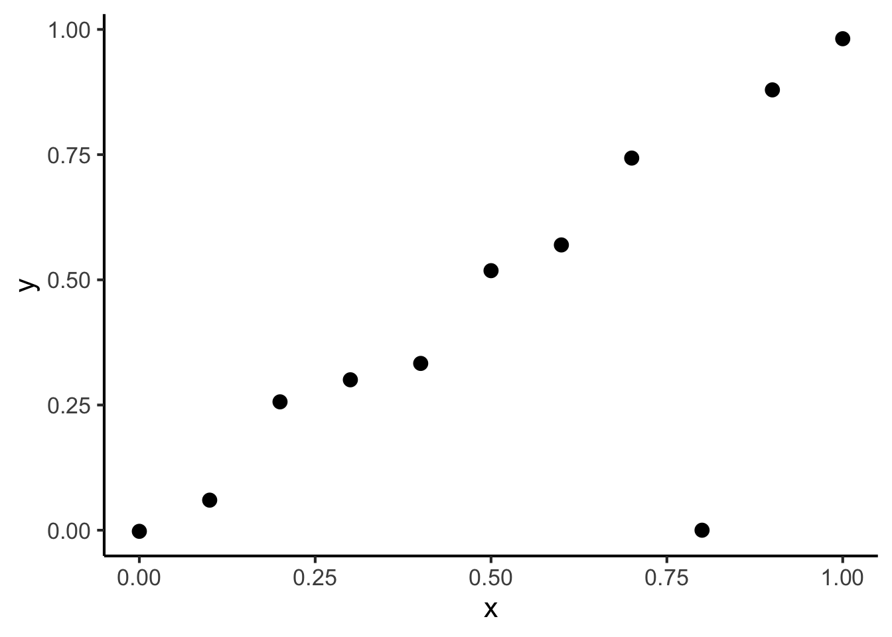
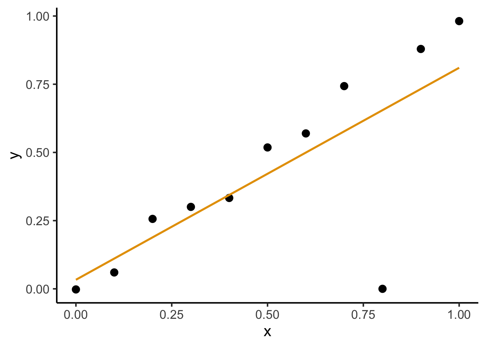
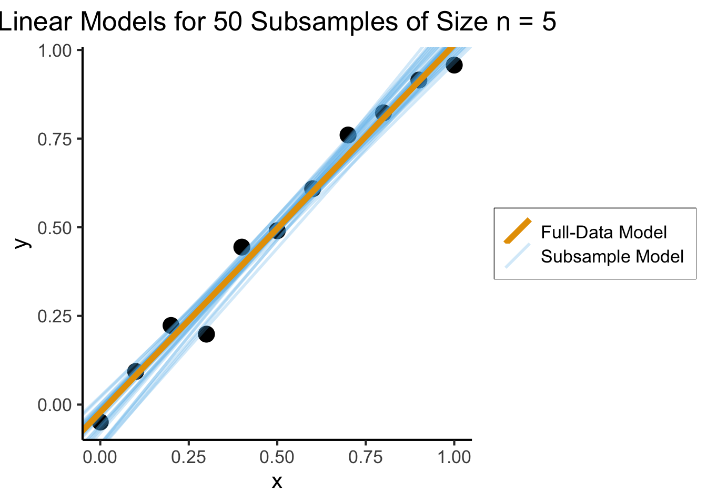
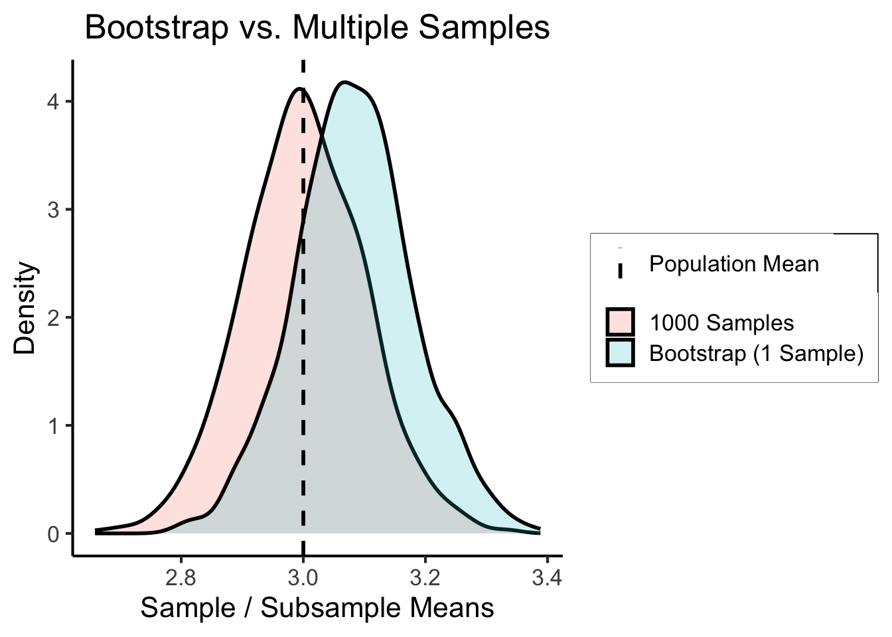

source("../dsan-globals/_globals.r")Week 11: Method of Moments and Bootstrap
DSAN 5100: Probabilistic Modeling and Statistical Computing
Section 03
Class Sessions
Method of Moments
\[ \DeclareMathOperator*{\argmax}{argmax} \DeclareMathOperator*{\argmin}{argmin} \newcommand{\bigexp}[1]{\exp\mkern-4mu\left[ #1 \right]} \newcommand{\bigexpect}[1]{\mathbb{E}\mkern-4mu \left[ #1 \right]} \newcommand{\definedas}{\overset{\text{defn}}{=}} \newcommand{\definedalign}{\overset{\phantom{\text{defn}}}{=}} \newcommand{\eqeventual}{\overset{\text{eventually}}{=}} \newcommand{\Err}{\text{Err}} \newcommand{\expect}[1]{\mathbb{E}[#1]} \newcommand{\expectsq}[1]{\mathbb{E}^2[#1]} \newcommand{\fw}[1]{\texttt{#1}} \newcommand{\given}{\mid} \newcommand{\green}[1]{\color{green}{#1}} \newcommand{\heads}{\outcome{heads}} \newcommand{\iid}{\overset{\text{\small{iid}}}{\sim}} \newcommand{\lik}{\mathcal{L}} \newcommand{\loglik}{\ell} \newcommand{\mle}{\textsf{ML}} \newcommand{\nimplies}{\;\not\!\!\!\!\implies} \newcommand{\orange}[1]{\color{orange}{#1}} \newcommand{\outcome}[1]{\textsf{#1}} \newcommand{\param}[1]{{\color{purple} #1}} \newcommand{\pgsamplespace}{\{\green{1},\green{2},\green{3},\purp{4},\purp{5},\purp{6}\}} \newcommand{\prob}[1]{P\left( #1 \right)} \newcommand{\purp}[1]{\color{purple}{#1}} \newcommand{\spacecap}{\; \cap \;} \newcommand{\spacewedge}{\; \wedge \;} \newcommand{\tails}{\outcome{tails}} \newcommand{\Var}[1]{\text{Var}[#1]} \newcommand{\bigVar}[1]{\text{Var}\mkern-4mu \left[ #1 \right]} \]
Generalized Method of Moments (GMM) Estimation
Recall that the \(k\)th moment of an RV \(X\) is \(\mu_k = \expect{X^k}\)
e.g., \(\mu_1 = \expect{X}\), \(\mu_2 = \expect{X^2} = \Var{X} + \expect{X}^2\)
Also recall (I rambled on about) how the MGF contains all information about a distribution. This means we can estimate distributions from data:
Define \(k\)th sample moment of \(\mathbf{X}_N\) to be \(\widehat{\mu}_k = \frac{1}{N}\sum_{i=1}^nX_i^k\). Then the equations
\[ \begin{align*} \mu_1(\param{\theta}) &= \widehat{\mu}_1 \\ \mu_2(\param{\theta}) &= \widehat{\mu}_2 \\ &\vdots \\ \mu_N(\param{\theta}) &= \widehat{\mu}_N \end{align*} \]
Give us a system of equations, allowing us to solve for parameters of our distribution!
Example: Bernoulli Distribution
- \(\mathbf{X}_N = \{X_1, X_2, \ldots, X_n\} \iid \text{Bern}(\param{p})\)
- Only one parameter (\(\param{p}\)), so all of our data can be used solely to generate an estimate of \(\param{p}\)!
- \(\mu_1 = \expect{X_i^1} = p\), \(\widehat{\mu}_1 = \frac{1}{N}\sum_{i=1}^N X_i^1\)
\[ \mu_1(p) = \widehat{\mu}_1 \iff p = \frac{1}{N}\sum_{i=1}^N X_i^1, \]
- Solve this system of 1 equation for \(p\) to obtain
\[ \underbrace{p^*_{\text{GMM}}}_{\mathclap{\text{Found using algebra}}} = \frac{1}{N}\sum_{i=1}^N X_i = \underbrace{p^*_{\text{MLE}}}_{\mathclap{\text{Found using calculus}}} \]
Method of Moments Step-By-Step
- Specify Model: Define a probabilistic model for the distribution of the data.
- Identify \(J\) Parameters of the distribution you’re trying to estimate: \(\param{\boldsymbol\theta} = (\param{\theta_1}, \ldots, \param{\theta_J})\)
- Calculate Sample Moments \(\widehat{\boldsymbol\mu} = (\widehat{\mu}_1, \ldots, \widehat{\mu}_J)\) from observed data.
- Set up Equations: equate population moments \(\mu_j\) (expressed as functions of \(\param{\boldsymbol\theta}\)) to their sample counterparts \(\widehat{\mu}_j\)
- Solve Equations: Solve the system of equations to obtain \(\boldsymbol\theta^*_{\text{GMM}}\)
- üôå: Applicable to a wide range of distributions.
- üòé: No calculus
- üßê: Other estimators may be more efficient
The Bias-Variance Tradeoff
But modern Machine Learning basically gets us rly close to a free lunch
 Jeff
Jeff
Intuition
| Low Variance | High Variance | |
|---|---|---|
| Low Bias |  |
 |
| High Bias |  |
 |
Figure adapted from Fortmann-Roe (2012), “Understanding the Bias-Variance Tradeoff”
Math
- We estimate “true” DGP \(Y = f(X)\) with model \(\widehat{f}(X)\)1, and then we use \(\widehat{f}\) to predict the value of \(Y\) for a point \(x_0\).
- What is our expected error at this point, \(\Err(x_0)\)?
\[ \begin{align*} \Err(x_0) &= \bigexpect{\left.(Y − \widehat{f}(x_0))^2 \right| X = x_0} \\ &= \sigma^2_{\varepsilon} + \left( \bigexpect{\widehat{f}(x_0)} − f(x_0) \right)^2 + \mathbb{E}\left[\widehat{f}(x_0) − \bigexpect{\widehat{f}(x_0)}\right]^2 \\ &= \sigma^2_{\varepsilon} + \left( \text{Bias}(\widehat{f}(x_0)\right)^2 + \bigVar{\widehat{f}(x_0)} \\ &= \text{Irreducible Error} + \text{Bias}^2 + \text{Variance}. \end{align*} \]
In Practice

Efficiency
- If we were just statisticians, we could stop at bias-variance
- A third consideration, since we’re also computer scientists, is computational efficiency:
Bootstrap Sampling
Bootstrap Sampling
- Basically a cheat code for squeezing as much information as possible out of your sample
- Intuition: Your model is robust to the extent that it still works for random subsamples of the full dataset
Building Intuition
Consider the following dataset:
x <- seq(from = 0, to = 1, by = 0.1)
n <- length(x)
eps <- rnorm(n, 0, 0.04)
y <- x + eps
# But make one big outlier
midpoint <- ceiling((3/4)*n)
y[midpoint] <- 0
of_data <- tibble::tibble(x=x, y=y)
# Linear model
lin_model <- lm(y ~ x)
# But now polynomial regression
poly_model <- lm(y ~ poly(x, degree = 10, raw=TRUE))
ggplot(of_data, aes(x = x, y = y)) +
geom_point(size = g_pointsize / 1.5) +
dsan_theme("full")
Using All Observations
Fitting a linear model gives us:
ggplot(of_data, aes(x = x, y = y)) +
geom_point(size = g_pointsize / 1.5) +
geom_smooth(aes(color="Linear"), method = lm, se = FALSE, show.legend=FALSE) +
# geom_abline(aes(intercept = 0, slope = 1, color = "Linear"), linewidth = 1, show.legend = FALSE) +
# stat_smooth(
# method = "lm",
# formula = y ~ poly(x, 10, raw = TRUE),
# se = FALSE, aes(color = "Polynomial")
# ) +
dsan_theme("full")
(What’s wrong with this picture?)
But is it Robust?
## Part 1: Set up data
library(dplyr)
library(ggplot2)
library(tibble)
# subsample <- of_data |> sample_n() sample(of_data, size=5)
gen_subsamples <- function(obs_data, num_subsamples, subsample_size) {
#print(subsample_size)
subsample_ints <- c()
subsample_coefs <- c()
for (i in 1:num_subsamples) {
cur_subsample <- obs_data |> sample_n(subsample_size, replace = TRUE)
cur_lin_model <- lm(y ~ x, data = cur_subsample)
cur_int <- cur_lin_model$coefficients[1]
subsample_ints <- c(subsample_ints, cur_int)
cur_coef <- cur_lin_model$coefficients[2]
subsample_coefs <- c(subsample_coefs, cur_coef)
}
subsample_df <- tibble(intercept = subsample_ints, coef = subsample_coefs)
return(subsample_df)
}
num_subsamples <- 50
subsample_size <- floor(nrow(of_data) / 2)
subsample_df <- gen_subsamples(of_data, num_subsamples, subsample_size)
full_model <- lm(y ~ x, data = of_data)
full_int <- full_model$coefficients[1]
full_coef <- full_model$coefficients[2]
full_df <- tibble(intercept=full_int, coef=full_coef)
mean_df <- tibble(
intercept=mean(subsample_df$intercept),
coef = mean(subsample_df$coef)
)
## Part 2: Plot
ggplot(of_data, aes(x = x, y = y)) +
geom_point(size=g_pointsize) +
# The random lines
geom_abline(data = subsample_df, aes(slope = coef, intercept = intercept, color='Subsample Model'), linewidth=g_linewidth, linetype="solid", alpha=0.25) +
# The original regression line
geom_abline(data=full_df, aes(slope = coef, intercept = intercept, color='Full-Data Model'), linewidth=2*g_linewidth) +
# The average of the random lines
#geom_abline(data=mean_df, aes(slope = coef, intercept = intercept, color='mean'), linewidth=2*g_linewidth) +
labs(
title = paste0("Linear Models for ", num_subsamples, " Subsamples of Size n = ", subsample_size),
color = element_blank()
) +
dsan_theme("full") +
theme(
legend.title = element_blank(),
legend.spacing.y = unit(0, "mm")
)What a Robust Model Looks Like
x <- seq(from = 0, to = 1, by = 0.1)
n <- length(x)
eps <- rnorm(n, 0, 0.04)
y <- x + eps
robust_data <- tibble(x = x, y = y)
robust_sub_df <- gen_subsamples(robust_data, 30, 5)
#print(robust_sub_df)
full_model_robust <- lm(y ~ x, data = robust_data)
full_int_robust <- full_model_robust$coefficients[1]
full_coef_robust <- full_model_robust$coefficients[2]
full_df_robust <- tibble(intercept = full_int_robust, coef = full_coef_robust)
ggplot(robust_data, aes(x = x, y = y)) +
geom_point(size=g_pointsize) +
# The random lines
geom_abline(data = robust_sub_df, aes(slope = coef, intercept = intercept, color='Subsample Model'), linewidth=g_linewidth, linetype="solid", alpha=0.25) +
# The original regression line
geom_abline(data=full_df_robust, aes(slope = coef, intercept = intercept, color='Full-Data Model'), linewidth=2*g_linewidth) +
# The average of the random lines
#geom_abline(data=mean_df, aes(slope = coef, intercept = intercept, color='mean'), linewidth=2*g_linewidth) +
labs(
title = paste0("Linear Models for ", num_subsamples, " Subsamples of Size n = ", subsample_size),
color = element_blank()
) +
dsan_theme("full") +
theme(
legend.title = element_blank(),
legend.spacing.y = unit(0, "mm")
)
Here the model is not “misled” by outliers
The Bootstrap Principle
- (This is the cheat code)2 Given a sample \(X = \{x_1, \ldots, x_n\}\), we can “squeeze” more information about out of it by pretending it is the population and sampling from this “population”, with replacement
\[ \begin{align*} \widetilde{X}_1 &= \{x_2, x_4, x_5, x_7, x_9\} \\ \widetilde{X}_2 &= \{x_2, x_3, x_4, x_7, x_{10}\} \\ &~\vdots \\ \widetilde{X}_{100} &= \{x_3, x_3, x_7, x_8, x_8\} \end{align*} \]
In Pictures

Note in particular how: (a) sampling is done with replacement and (b) the original sample could therefore be replicated exactly in a bootstrap sample (here, \(\widetilde{X}_3\))
How Well Does it Work?
Answer: Absurdly, unreasonably well.
pop <- rnorm(1000000, mean = 3, sd = 1)
# Sampling 1k times
rand_samples <- replicate(
1000,
sample(pop, size=100, replace = FALSE)
)
sample_means <- colMeans(rand_samples)
sample_df <- tibble(est = sample_means, Method = "1000 Samples")
# Sampling 1 time and bootstrapping
bs_sample <- sample(pop, size = 100, replace = FALSE)
subsamples <- replicate(1000, sample(bs_sample, size=100, replace = TRUE))
bs_means <- colMeans(subsamples)
bs_df <- tibble(est = bs_means, Method = "Bootstrap (1 Sample)")
result_df <- bind_rows(sample_df, bs_df)
sim_dnorm <- function(x) dnorm(x, mean = 3, sd = 1)
ggplot(result_df, aes(x=est, fill=Method)) +
dsan_theme("full") +
geom_density(alpha=0.2, linewidth=g_linewidth) +
geom_vline(aes(xintercept=3, linetype="value"),linewidth=g_linewidth) +
scale_linetype_manual("", values=c("density"="solid", "value"="dashed"), labels=c("Population Mean", "testing")) +
theme(
legend.title = element_blank(),
legend.spacing.y = unit(0, "mm")
) +
labs(
title = "Bootstrap vs. Multiple Samples",
x = "Sample / Subsample Means",
y = "Density"
)
sample_est <- mean(sample_means)
sample_str <- sprintf("%.3f", sample_est)
sample_err <- abs(sample_est - 3)
sample_err_str <- sprintf("%.3f", sample_err)
sample_output <- paste0("1K samples estimate: ", sample_str, " (abs. err: ", sample_err_str, ")")
bs_est <- mean(bs_means)
bs_str <- sprintf("%.3f", bs_est)
bs_err <- abs(bs_est - 3)
bs_err_str <- sprintf("%.3f", bs_err)
bs_output <- paste0("Bootstrap estimate: ", bs_str, " (abs. err: ", bs_err_str, ")")
writeLines(paste0(sample_output,"\n",bs_output))1K samples estimate: 2.999 (abs. err: 0.001)
Bootstrap estimate: 2.908 (abs. err: 0.092)Bootstrapped “Confidence” Intervals
- We get a “confidence” interval for free!
- \(\alpha = 0.05\)? Just take middle 95% of your bootstrapped estimates!
Code
quantile(bs_means, c(0.025, 0.975)) 2.5% 97.5%
2.691501 3.121977 - Easily interpretable: “After repeating this process 1000 times, 95% of the results fell between 2.84 and 3.20”
Bootstrapped Hypothesis Testing
Hypothesis Testing via Bootstrap
- Note that our choice to estimate the mean was arbitrary!
- Could just as easily be any chosen test statistic: mean, median, variance, range, 35th percentile, etc.
- Hypothesis testing requires choice for test statistic \(t\)
- \(\mathcal{H}_A\): Group A taller than Group B
- \(\mathcal{H}_0\): No difference between Group A and Group B heights
- \(\mathcal{H}_0 \iff \mu_A = \mu_B \iff \underbrace{t = \mu_A - \mu_B}_{\text{Test statistic for }\mathcal{H}_0} = 0\)
- Bootstrapped test stat, therefore, is just \(\widehat{t} = \widehat{\mu}_A - \widehat{\mu}_B\)!
Veracity of Hypothesis is Relative to Null Distributions
- Counterfactual thinking: What would the world look like if the null hypothesis was true? That is, if the relationship of interest did not exist.
- Simulate the test statistic within this null world, say, \(N = 10000\) times.
- Now look at how likely/unlikely the observed test statistic is relative to these 10000 null-world-based test statistics.
Real World Example: Charter School Dropout Rates
| (New York City) | Public Schools | Charter Schools | Total |
|---|---|---|---|
| Enrolled Students | \(N_\text{pub} \approx 893000\) | \(N_\text{ch} \approx 157000\) | \(N = 1050649\) |
| Yearly Dropouts | \(D_\text{pub} \approx 24500\) | \(D_\text{ch} \approx 16000\) | \(D \approx 44000\) |
| Yearly Dropout Rate | \(R_\text{pub} \approx 2.7\%\) | \(R_\text{ch} \approx 10\%\) | \(R \approx 4.2\%\) |
| \(\mathbb{E}[D \mid R = 4.2\%]\) | \(\mathbb{E}[D_\text{pub}] = 37506\) | \(\mathbb{E}[D_\text{ch}] = 6594\) | \(\mathbb{E}[\Delta] = 30912\) |
- So, are charter schools systematically pushing lower-performing students out?
- It depends on how we model the decision to drop out, how we set up our null and alternative hypotheses, and what test statistic we use to evaluate these hypotheses!
Intuition Check: Why Do We Need To Do All This?
- Doesn’t \(R_\text{ch} > R_\text{pub} \implies\) charter schools guilty?
- Remember our fair vs. biased coins examples
- Let’s simulate a fair coin: \(\param{p} = \Pr(\textsf{H}) = 0.5\)
Code
set.seed(5100)
library(Rlab)
num_flips <- 10
p <- 0.5
coin_obs <- rbern(num_flips, p)
coin_str <- paste0(coin_obs, collapse=' ')
num_heads <- sum(coin_obs)
writeLines(paste0(coin_str," => ",num_heads," heads"))1 0 0 0 1 0 0 0 0 1 => 3 heads- Seeing 3 heads \(~\nimplies \Pr(\textsf{H}) = 0.3\)!
So How Can We Determine Whether The Coin Is Fair?
library(tidyverse)
num_replications <- 1000
coin_seqs <- replicate(num_replications, rbern(num_flips, p))
heads_per_seq <- colSums(coin_seqs)
heads_df <- tibble(num_heads = heads_per_seq)
highlight_3 <- c(rep("grey",2), rep(cbPalette[1],1), rep("grey",7))
ggplot(heads_df, aes(x=factor(num_heads))) +
geom_histogram(stat='count', fill=highlight_3) +
dsan_theme("quarter") +
labs(
title=paste0("Results From N=",num_replications," 10-Coin-Flip Trials")
)- We have to generate many sequences of coin flips, then look at the distribution of the number of heads in each sequence →
Code
three_df <- heads_df |> filter(num_heads == 3)
nrow(three_df) / nrow(heads_df)- Now we can quantify exactly how “fishy” it was to get 3 heads: if the coin was fair, this would happen about 10.7% of the time:
[1] 0.107How Fishy Is Too Fishy?
- This means, given a context within which we’re analyzing the data, we can construct a fishiness threshold \(T\): then, if \(\Pr(\text{observed outcome}) < T%\), we can say coin is not fair
- Some journals arbitrarily choose 5% (95% confidence)
- I prefer \(T = 11\%\) (89% confidence), for same reason as anthropologist/statistician Richard McElreath:
89 is a prime number, so if someone asks you to justify it, you can stare at them meaningfully and incant, “why, because it’s prime, of course!” That’s no worse than the conventional justification for 95%. (McElreath 2020, 88)
Our Model (Data-Generating Process)
- What process gives rise to these dropout rates?
- Straightforward model (which we can extend / complicate to include additional factors as needed):
- Student \(i\) flips a coin with \(\Pr(\textsf{H}) = \param{p}\): if \(\textsf{H}\) student drops out, if \(\textsf{T}\) they stay enrolled
- Let \(X_i = 1\) if student \(i\) drops out, \(0\) otherwise.
- Then for school \(j\) with \(N_j\) students, \(D_j = \sum_{i=1}^{N_j}X_i\) = number of dropouts. Since sum of Bernoulli RVs has Binomial distribution, \(D_j \sim \text{Binom}(N_j, p_j)\)
Formulating+Simulating the Null Hypothesis
- \(H_0: p_\text{ch} = p_\text{pub} \iff p_\text{ch} - p_\text{pub} = 0\). There is no difference between the individual-student dropout rate at public schools and the individual-student dropout rate at charter schools
- \(H_A: p_\text{pub} < p_\text{ch} \iff p_\text{pub} - p_\text{ch} < 0\). There is an underlying difference between the rates at which charter school students and public school students choose to drop out. In this case, the former is greater than the latter
- So, to simulate null-world, we will simulate public school population and charter school population with the same individual-student dropout rate: \(\param{p_\text{pub}} = \param{p_\text{ch}} = \param{p}\) then check how often the school-level dropouts \(D_\text{pub}\) and \(D_\text{ch}\) differ by \(24500 - 16000 = 8500\) or more
Coding the Simulation
- Simulating a few public-charter pairs:
# The true population sizes
N_ch <- 157000
N_pub <- 893000
# We'll use a function to compute num_sims simulations of a school with N_j
# students, each with dropout probability p
simulate_dropouts <- function(num_sims, N_j, p) {
return(rbinom(num_sims, N_j, p))
}
# We're simulating "null world" by generating data
# on the basis of the assumption p_pub_sim = p_ch_sim
# So we call the function with the same p for both
# simulated schools. In this case, we'll use the
# *overall average* dropout rate across all schools:
# 4.2% = 0.042
p_sim <- 0.042
# But we'll write a general function for simulating
# pairs of schools, whether or not they have the same
# Pr(dropout):
simulate_pair <- function(num_sims, p_ch, p_pub) {
D_ch <- simulate_dropouts(num_sims, N_ch, p_ch)
D_pub <- simulate_dropouts(num_sims, N_pub, p_pub)
sim_df <- tibble(D_ch=D_ch, D_pub=D_pub)
return(sim_df)
}
# Run the simulation, with the *same* p parameter
# for both our simulated schools:
run_sims_same_p <- function(num_sims, printResults=FALSE) {
sim_df <- simulate_pair(num_sims, p_sim, p_sim)
# And from these two counts, we can compute the
# *test statistic*: in this case, the difference
sim_df <- sim_df |> mutate(
test_stat = D_pub - D_ch
)
return(sim_df)
}
small_sim_df <- run_sims_same_p(3)
small_sim_df| D_ch | D_pub | test_stat |
|---|---|---|
| 6528 | 37395 | 30867 |
| 6606 | 37287 | 30681 |
| 6607 | 37469 | 30862 |
Generating The Null Distribution
- This is the range of values we might expect to see (under our model!) if two schools had the same underlying dropout probabilities
- \(\Pr(D_\text{pub} - D_\text{ch} = v \mid H_0) \propto\) height of bar at \(x = v\):
num_trials <- 10000000
bw <- 100
sim_df <- run_sims_same_p(num_trials)
# And plot the values of our test statistic
null_dist_plot <- ggplot(sim_df, aes(x=test_stat)) +
geom_histogram(binwidth=bw) +
geom_density(
aes(y = bw * after_stat(count)),
linewidth = g_linewidth,
fill = cbPalette[1],
alpha = 0.333
) +
dsan_theme() +
labs(
x = "Test Statistic (D_pub - D_ch)",
y = "Count",
title = paste0("(Public Dropouts - Charter Dropouts), ",format(num_trials,big.mark=' ', scientific=FALSE)," Simulations")
)
null_dist_plotHow Extreme Is Our Observed Value Relative To This Range?
- Same plot, with a vertical (red) line at our observed value:
library(scales)
null_obs_plot <- ggplot(sim_df, aes(x=test_stat)) +
geom_histogram(binwidth=bw) +
geom_density(
aes(y = (bw/3) * after_stat(count)),
linewidth = g_linewidth,
fill = cbPalette[1],
alpha = 0.333
) +
geom_vline(
xintercept = 8500,
color='red',
linewidth = g_linewidth,
linetype = 'dashed'
) +
scale_x_continuous(breaks=seq(from=5000, to=35000, by=5000), limits=c(5000, 35000)) +
scale_y_continuous(labels = label_number(big.mark=' ')) +
dsan_theme() +
labs(
x = "Test Statistic (D_pub - D_ch)",
y = "Count",
title = paste0("(Public Dropouts - Charter Dropouts), ",format(num_trials,big.mark=' ',scientific=FALSE)," Simulations")
)
null_obs_plotDrawing Conclusions
mean(sim_df$test_stat)
cdf_at_val <- function(v) {
lt_val_df <- sim_df |> filter(test_stat < v)
prop_lt <- nrow(lt_val_df) / nrow(sim_df)
return(prop_lt)
}
writeLines(format(cdf_at_val(31000), scientific=FALSE))
writeLines(format(cdf_at_val(30500), scientific=FALSE))
cdf_val <- cdf_at_val(30000)
cdf_val_fmt <- format(cdf_val, scientific=FALSE)
lt30k_df <- sim_df |> filter(test_stat < 30000)
num_lt30k <- nrow(lt30k_df)
num_total <- nrow(sim_df)
num_total_fmt <- format(num_total, big.mark=',')
writeLines(paste0(cdf_val_fmt," = ",num_lt30k," / ",num_total_fmt))
min(sim_df$test_stat)- \(\overline{T} = \overline{D_\text{pub} - D_\text{ch}}\):
[1] 30911.98- \(\Pr(D_\text{pub} - D_\text{ch}) < 31000\):
0.6650288- \(\Pr(D_\text{pub} - D_\text{ch}) < 30500\):
0.0222126- \(\Pr(D_\text{pub} - D_\text{ch}) < 30000\):
0.0000037 = 37 / 10,000,000- In fact, the lowest value we ever saw, across 10 million simulations, was:
[1] 29879(Now You Can Present Your Findings In Congressional Testimony üòâ)

References
Hastie, Trevor, Robert Tibshirani, and Jerome Friedman. 2013. The Elements of Statistical Learning: Data Mining, Inference, and Prediction. Springer Science & Business Media.
McElreath, Richard. 2020. Statistical Rethinking: A Bayesian Course with Examples in R and STAN. CRC Press.
Tharwat, Alaa. 2019. “Parameter Investigation of Support Vector Machine Classifier with Kernel Functions.” Knowledge and Information Systems 61 (3): 1269–1302. https://doi.org/10.1007/s10115-019-01335-4.
Footnotes
It’s even more complicated, since we don’t even know whether the features \(X\) we’ve chosen are actually the features in the world that causally affect \(Y\), but that’s for later classes… Or see Hastie, Tibshirani, and Friedman (2013)!↩︎
The fact that this “just works” is similar to the surprising efficacy of the Naïve Bayes model (see DSAN 5000!)↩︎